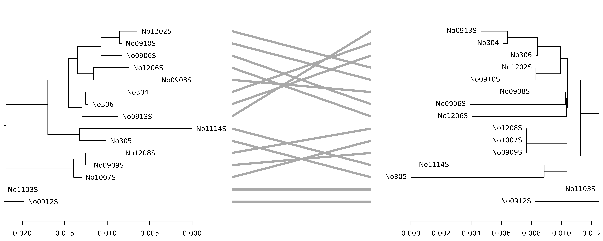

phylogram: an R package for phylogenetic analysis with dendrograms
Shaun P. Wilkinson 1,2 and Simon K. Davy 1
Source:vignettes/phylogram-vignette.Rmd
phylogram-vignette.Rmd1 School of Biological Sciences, Victoria University of Wellington, P.O. Box 600, Wellington, New Zealand.
2 Correspondence author. E-mail: shaunpwilkinson@gmail.com
Abstract
The phylogram R package is a tool for for developing phylogenetic trees as deeply-nested lists known as “dendrogram” objects. It provides functions for conversion between dendrograms and “phylo” class objects, as well as several tools for command-line tree manipulation and import/export via Newick parenthetic text. This improves accessibility to the comprehensive range of object-specific analytical and tree-visualization functions found across a wide array of bioinformatic R packages. The phylogram package is released under the GPL-3 license, and is available for download from CRAN https://CRAN.R-project.org/package=phylogram and GitHub https://github.com/ropensci/phylogram.
Introduction
The R environment continues to gain popularity as a platform for bioinformatic analysis, due to the reproducible code-based workflow and the many powerful analytical tools available in a suite of open-source packages such as ape (Paradis, Claude, and Strimmer 2004), phangorn (Schliep 2011) and Phytools (Revell 2012). These packages typically employ a tree structure known as the “phylo” object, whose primary element is an integer matrix with one row for each edge in the graph, and two columns giving the indices of the connecting nodes. This is a versatile and memory-efficient representation suitable for most applications encountered by evolutionary biologists, and hence a comprehensive array of tools has been developed for parsing, manipulating, analyzing and visualizing trees in matrix format.
An alternative tree structure is the “dendrogram” object, generated using the as.dendrogram function in the stats package (R Core Team 2017). Rather than a matrix of edges, a dendrogram is a hierarchical list. These ‘lists of lists’ can be deeply nested, with the limit depending on the C stack size (settable via options("expressions")). While less memory-efficient than matrix-based tree objects, a useful feature of the nested-list representation is its modularity, whereby the sub tree of a tree is itself a tree - a dendrogram within a dendrogram. This means that dendrogram objects are subsettable in the same way that standard lists are, which in addition to the inbuilt editing functions such as cut and merge, facilitates intuitive command-line tree manipulation. An especially powerful feature of this object type is that tree editing operations can be carried out recursively using fast inbuilt functions in the “apply” family such as dendrapply and lapply.
Each node of a dendrogram object has the following mandatory attributes:
- “height” the position of the node along the vertical axis (assuming the graph is orientated vertically)
- “midpoint” the horizontal distance of the node from the left-most member of the sub tree (where the horizontal distance between adjacent leaves is 1 unit)
- “members” the number of terminal leaf nodes belonging to the node
- “class” all nodes have the class attribute “dendrogram”
Rather than lists, terminal leaf nodes are length-1 integer vectors whose values correspond to the indices of the members in the set. The “members” attributes of leaf nodes is always 1, the “midpoint” attribute is 0, and they have two additional attributes:
- “leaf” TRUE for terminal nodes (NULL otherwise)
- “label” an optional character string giving the name of the taxon or group
Aside from those listed above, users may attach other objects as attributes to the dendrogram nodes. For example, “label” attributes can be attached to inner nodes, and users can specify plotting parameters for each node by setting the attributes “nodePar” and “edgePar”. Any number of non-standard objects can also be attached as node attributes, which can be useful for storing additional metadata such as bootstrap values and taxonomic information.
The flexibility, modularity and intuitive structure of dendrogram objects are appealing to many users, particularly where highly dynamic tree structures are required for applications such as machine learning clustering and classification. There is also a large and growing number of resources for manipulating and plotting dendrograms in contributed packages such as dendextend (Galili 2015), and hence functions enabling bi-directional conversion between “dendrogram” and “phylo” class objects would expand the range of tools available for both object types. While conversion is currently possible using the “hclust” object as an intermediary, this object type does not support non-zero leaf node heights and hence is limited to ultrametric trees only.
The phylogram package
Here, we introduce phylogram, an R package for structuring evolutionary trees as deeply-nested lists and transforming trees between list- and matrix-type objects. The package also contains functions for importing and exporting dendrogram objects to and from parenthetic text, as well as several functions for manipulating trees in nested-list format. These functions are detailed below with examples of their utility.
Importing and exporting trees
The Newick parenthetic text format (a.k.a. the New Hampshire format; Felsenstein et al. 1986) is a universal phylogenetic tree representation that is compatible with most tree-editing software. The phylogram function read.dendrogram wraps the the Newick parser read.tree from the ape package (Paradis, Claude, and Strimmer 2004), and converts the intermediate “phylo” object to a dendrogram. This function supports weighted edges, labels with special meta-characters (enclosed in single quotation marks), comments (enclosed in square brackets; ignored by the parser), multifuricating nodes, and both rooted and unrooted trees. Inner-node labels are also supported, and are attached as “label” attributes to non-leaf nodes. Objects of class “dendrogram” can also be exported as Newick-style parenthetic text using the function write.dendrogram.
Example 1: Import and export a tree from a Newick string
Consider the simple example of a tree with three members named “A”, “B” and “C”, where “B” and “C” are more closely related to each other than either is to “A”. An unweighted Newick string for this tree would be (A,(B,C)); This can be imported as a dendrogram object using the read.dendrogram function as follows:
library(phylogram)
x <- read.dendrogram(text = "(A,(B,C));")
plot(x, yaxt = "n")Figure 1: A simple dendrogram with three terminal leaf nodes
The following command writes the object back to the console in Newick format without edge weights:
write.dendrogram(x, edges = FALSE)
#> [1] "(A,(B,C));"The syntax is similar when reading and writing text files, except that the text argument is replaced by file, and a valid file path is passed to the function.
Converting tree objects
Dendrograms can be converted to “phylo” objects and vice versa using the as.phylo.dendrogram and as.dendrogram.phylo methods. Unlike functions that employ an “hclust” object as an intermediary (e.g. as.dendrogram(as.hclust(phy))), these methods retain all weighted edges and do not require trees to be ultrametric. This facilitates access to the comprehensive range of functions that are specific for either dendrograms or “phylo” objects in contributed packages such as dendextend (Galili 2015) and ape (Paradis, Claude, and Strimmer 2004), respectively. Note that other packages may employ the same function names, and hence the method dispatched may depend on the order in the which packages are loaded. For this reason it may be safer to use the full function call (e.g. phylogram::as.phylo.dendrogram(x) and phylogram::as.dendrogram.phylo(x)) when using these methods.
Example 2: Convert a “phylo” object to a dendrogram
A common application requiring conversion between “phylo” and “dendrogram” objects involves plotting tanglegrams to visualize incongruence between two phylogenetic trees. The dendextend package (Galili 2015) features the function tanglegram for versatile plotting of two distinct trees and indicating the discordant nodes using a series of non-parallel edges. However this function does not currently support non-ultrametric “phylo” objects. In this example, two weighted neighbor-joining trees are generated from the left and right sections of the woodmouse alignment from the ape package (Paradis, Claude, and Strimmer 2004), and converted to dendrograms for visual comparison using dendextend::tanglegram.
library(ape)
data(woodmouse)
## generate distance matrices for each section of the alignment
dist1 <- dist.dna(woodmouse[, 1:482])
dist2 <- dist.dna(woodmouse[, 483:965])
## build neighbor-joining trees
phy1 <- nj(dist1)
phy2 <- nj(dist2)
## root with No0912S as outgroup
phy1 <- root(phy1, "No0912S")
phy2 <- root(phy2, "No0912S")
## convert phylo objects to dendrograms
dnd1 <- as.dendrogram(phy1)
dnd2 <- as.dendrogram(phy2)
## rearrange in ladderized fashion
dnd1 <- ladder(dnd1)
dnd2 <- ladder(dnd2)
## plot the tanglegram
dndlist <- dendextend::dendlist(dnd1, dnd2)
dendextend::tanglegram(dndlist, fast = TRUE, margin_inner = 5)
Figure 2: Tanglegram showing incongruence between the left- and right-hand sections of the woodmouse alignment.
Tree editing/manipulation
The phylogram package features several additional functions to facilitate some of the more common manipulation operations. Leaf nodes and internal branching nodes can be removed using the function prune, which identifies and recursively deletes nodes based on pattern matching of “label” attributes. This is slower than the ape function drop.tip, but offers the benefits of versatile string matching using regular expressions, and the ability to remove inner nodes (and by extension all of their subnodes) that feature matching “label” attributes. To aid visualization, the function ladder rearranges the tree, sorting nodes by the number of members (analogous to the ladderize function in the ape package). Another function aiding in tree visualization is as.cladogram, which resets the “height” attributes of all terminal leaf nodes to zero and progressively resets the heights of the inner nodes by single incremental units in a bottom-up fashion. The function reposition scales the heights of all nodes in a tree by a given constant (passed via the argument shift), and features the option to reset all node heights so that height of the farthest terminal leaf node from the root is zero (by specifying shift = "reset"). The function remidpoint recursively corrects all “midpoint”, “members” and “leaf” attributes following manual editing of a tree or while converting a nested list to a “dendrogram” object.
Example 3: Building and manipulating dendrograms
The simple three-leaf dendrogram in Figure 1 can be created manually as follows:
x <- list(1, list(2, 3))
## attach "leaf" and "label" attributes to leaf nodes
attr(x[[1]], "leaf") <- TRUE
attr(x[[2]][[1]], "leaf") <- attr(x[[2]][[2]], "leaf") <- TRUE
attr(x[[1]], "label") <- "A"
attr(x[[2]][[1]], "label") <- "B"
attr(x[[2]][[2]], "label") <- "C"
## set "height" attributes for all nodes
attr(x, "height") <- 2
attr(x[[1]], "height") <- 0
attr(x[[2]], "height") <- 1
attr(x[[2]][[1]], "height") <- attr(x[[2]][[2]], "height") <- 0
## set "midpoints" attributes for all nodes
attr(x, "midpoint") <- 0.75
attr(x[[1]], "midpoint") <- 0
attr(x[[2]], "midpoint") <- 0.5
attr(x[[2]][[1]], "midpoint") <- attr(x[[2]][[2]], "midpoint") <- 0
## set "members" attributes for all nodes
attr(x, "members") <- 3
attr(x[[1]], "members") <- 1
attr(x[[2]], "members") <- 2
attr(x[[2]][[1]], "members") <- attr(x[[2]][[2]], "members") <- 1
## set class as "dendrogram"
## Note that setting the class for the root node
## automatically sets the class of all nested subnodes
class(x) <- "dendrogram"
x
#> 'dendrogram' with 2 branches and 3 members total, at height 2As demonstrated above, manually setting attributes on dendrogram objects can be rather tedious, motivating the development of functions to automate the generation and manipulation of these tree structures.
This simple tree can be recreated more succinctly using the phylogram package functions as follows:
x <- list(1, list(2, 3))
## recursively set class, midpoint, members and leaf attributes
x <- remidpoint(x)
## set incremental height attributes
x <- as.cladogram(x)
## set label attributes using dendrapply
set_label <- function(node){
if(is.leaf(node)) attr(node, "label") <- LETTERS[node]
return(node)
}
x <- dendrapply(x, set_label)
x
#> 'dendrogram' with 2 branches and 3 members total, at height 2Similarly, dendrogram objects can be subset using either the prune function or standard list-subsetting syntax, again with the help of utility functions to recursively reset node attributes. The following code demonstrates one option for rearranging the tree with species A and B as sister taxa and C as the ancestor:
## isolate root node (species C)
ancestor <- prune(x, pattern = "C", keep = TRUE)
## alternative option using subset operator
ancestor <- x[[2]][[2]]
## create subtree without species C
subtree <- prune(x, pattern = "C")
## graft subtree onto root
x <- list(ancestor, subtree)
## set attributes as above
x <- as.cladogram(remidpoint(x))
## plot dendrogram
plot(x, yaxt = "n")Figure 3: Rearranged dendrogram with species C ancestral to A and B
Tree visualization
Publication-quality trees can be generated from dendrogram objects using the stats plotting function plot.dendrogram, and the extensive plotting functions available in dendrogram-enhancing packages such as circlize (Gu et al. 2014) and dendextend (Galili 2015). The latter also offers the facility to convert dendrograms to “ggdend” objects, for which many powerful ‘grammar of graphics’ plotting functions are available in the ggplot2 (Wickham 2009) and ggdendro (DeVries and Ripley 2016) packages. Moreover, there are several advanced plotting options for “phylo” objects in the ape package (Paradis, Claude, and Strimmer 2004), as well as the Bioconductor package ggtree (Yu et al. 2017). Given the extensive tree visualization options already available, we do not include any additional plotting functions in the phylogram package.
Summary
The phylogram package offers a dendrogram parser for phylogenetic trees, several new tree-editing functions, and a bridge between the “dendrogram”" and “phylo” object types that improves accessibility to the comprehensive number of object-specific functions found across a suite of contributed packages. Future versions of the package will aim to further expand the range of input formats and object types available, thereby helping to integrate the wide variety of phylogenetic applications implemented in the R programming language. This software is still under active development, and will continue to be upgraded and expanded as new applications arise. Bug reports and other feedback are welcomed and can be directed to the GitHub issues page at http://github.com/ropensci/phylogram/issues, or the phylogram google group at https://groups.google.com/group/phylogram.
Acknowledgements
This software was developed with funding from a Rutherford Foundation Postdoctoral Research Fellowship from the Royal Society of New Zealand. The authors declare no competing interests.
References
DeVries, Andrie, and Brian D Ripley. 2016. ggdendro: create dendrograms and tree diagrams using ’ggplot2’. https://cran.r-project.org/package=ggdendro.
Felsenstein, J, J Archie, WHE Day, W Maddison, C Meacham, FJ Rohlf, and D Swofford. 1986. “The newick tree format, 1986.” http://evolution.genetics.washington.edu/phylip/newicktree.html.
Galili, Tal. 2015. “dendextend: An R package for visualizing, adjusting and comparing trees of hierarchical clustering.” Bioinformatics 31 (22): 3718–20. https://doi.org/10.1093/bioinformatics/btv428.
Gu, Zuguang, Lei Gu, Roland Eils, Matthias Schlesner, and Benedikt Brors. 2014. “circlize implements and enhances circular visualization in R.” Bioinformatics 30 (19): 2811–2. https://doi.org/10.1093/bioinformatics/btu393.
Paradis, Emmanuel, Julien Claude, and Korbinian Strimmer. 2004. “APE: analyses of phylogenetics and evolution in R language.” Bioinformatics 20: 289–90. https://doi.org/10.1093/bioinformatics/btg412.
R Core Team. 2017. “R: A Language and Environment for Statistical Computing.” Vienna, Austria: R Foundation for Statistical Computing. https://cran.r-project.org/.
Revell, Liam J. 2012. “phytools: an R package for phylogenetic comparative biology (and other things).” Methods in Ecology and Evolution 3 (2): 217–23. https://doi.org/10.1111/j.2041-210X.2011.00169.x.
Schliep, Klaus Peter. 2011. “phangorn: phylogenetic analysis in R.” Bioinformatics 27 (4): 592–93. https://doi.org/10.1093/bioinformatics/btq706.
Wickham, Hadley. 2009. ggplot2: Elegant Graphics for Data Analysis. New York: Springer-Verlag. http://ggplot2.org.
Yu, Guangchuang, David Smith, Huachen Zhu, Yi Guan, and Tommy Tsan-Yuk Lam. 2017. “ggtree: an R package for visualization and annotation of phylogenetic trees with their covariates and other associated data.” Methods in Ecology and Evolution 8 (1): 28–36. https://doi.org/10.1111/2041-210X.12628.